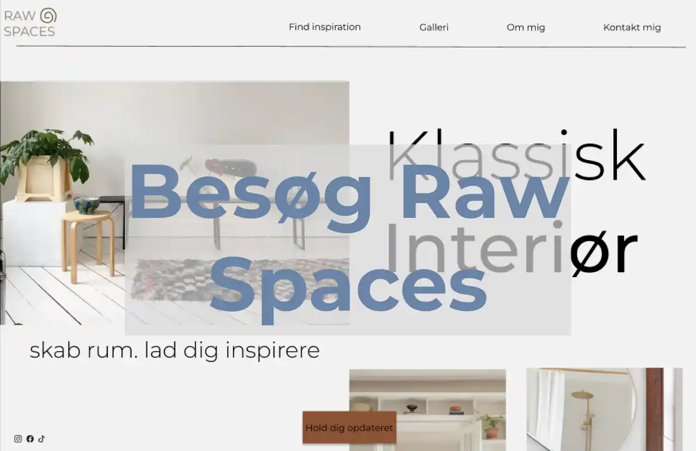

Tema 3 - Grundlæggende UX/UI
I dette tema fokuserede vi på at gøre vores hjemmesider så
brugervenlige som muligt.
Vi udførte tests som 5-sekunders test, tænke højt,
heuristisk analyse og Lighthouse.
Forarbejdet inkluderede mindmaps, brainstorming, målgruppeanalyse og
desk research samt sketching, prototyper og styletiles for at sikre et
klart udgangspunkt.
Vi lærte også at tilføje detaljer som favicon og
burgermenu for bedre navigation og
brugervenlighed.
Jeg arbejdede med CSS-selectors og brugte grid til at
skabe en luftig og professionel hjemmeside.
Nedenfor ses mit moodboard for dette tema
Resultatet blev min side "Raw Spaces," som du kan besøge herunder.
